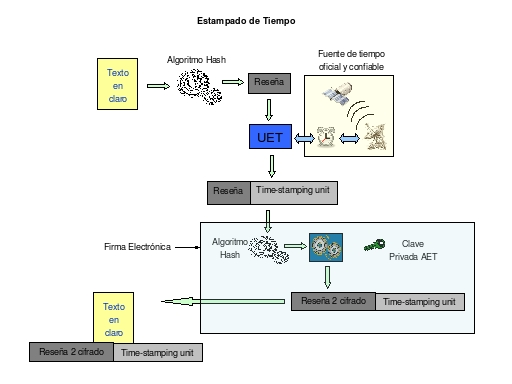

16.3.- Estampillado de tiempo
El estampado de tiempo resulta de la aplicación de una función matemática denominada función hash, que luego es enviada como entrada a la unidad de sellado de tiempo (UET), donde obtiene la hora oficial de una fuente confiable de tiempo, crea un sello de tiempo que asocie el instante de tiempo actual un numero de serie único y el dato reseña, creando un token de sellado de tiempo que se firmara electrónicamente. (Ver figura S5.3-1).

Figura S5.3-1, Esquema, Estampillado de tiempo